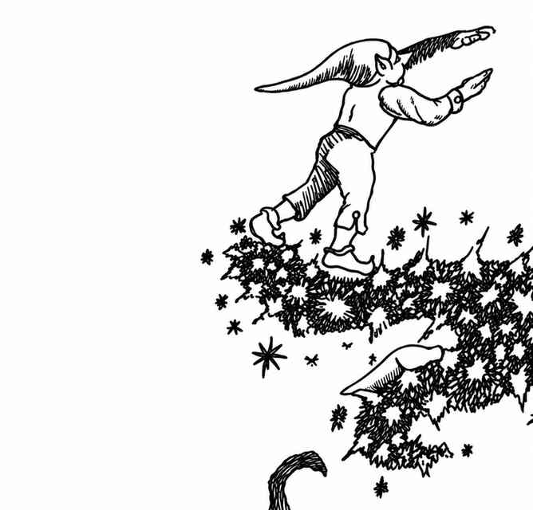

小妖精 · Leprechaun
 |
|
小妖精通常只住在风景秀丽、草木繁茂的绿色乡野，那里有起伏的山丘与山谷供它们嬉戏。偶尔，一群爱冒险的小妖精也会暂居别处。这些身材矮小的生物天生具有魔法天赋且爱恶作剧：它们可以随意隐形、改变非生物的形状、制造幻象，并可随意施展传声术。它们听觉敏锐，因此不会遭遇突袭。
小妖精常会（75%）趁人不备偷走贵重物品，随后隐形逃跑；偷窃成功率为 75%。若有人紧追不舍，每追逐一轮，小妖精有 25% 概率丢下赃物。
若被抓住，或在巢穴中被发现，小妖精会设法误导捕获者，让对方以为它正交出财宝，实际上却在耍花招。想真正拿到小妖精的财宝，需要格外谨慎。
弱点。 小妖精非常喜欢葡萄酒，可以利用这一点智取它们。
据传，小妖精是带有浓厚皮克精血统的半身人种族。